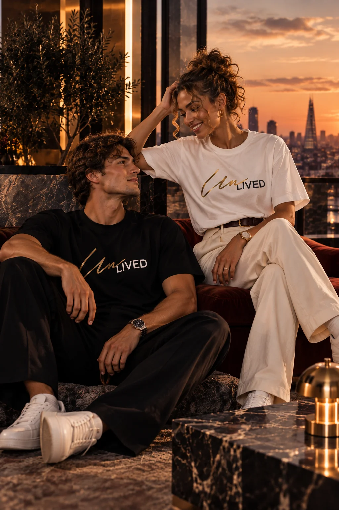
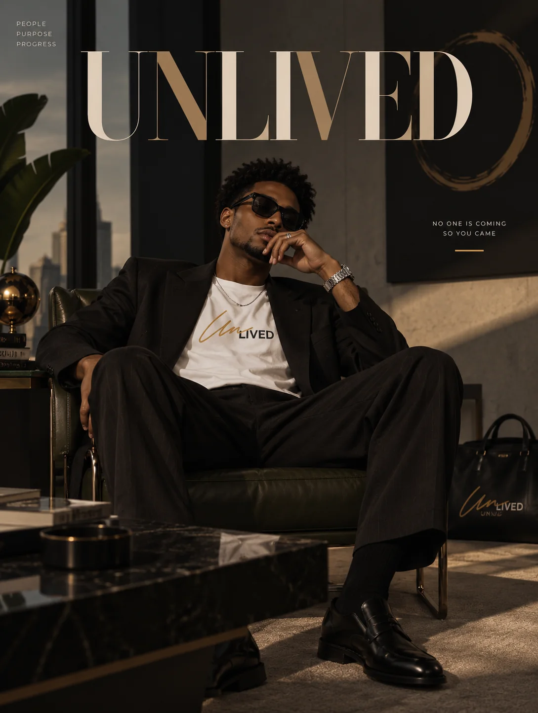

Tu sais ce que tu aimerais tenter. Puis la peur murmure : et si tu échouais ?

UNLIVED — UNTIL YOU DECIDE
Il y a une vie
que tu n’as pas
encore vécue.
Elle n’attend pas que tu n’aies plus peur. Elle commence au moment où tu choisis d’avancer avec elle.
Découvrir notre histoire ↓01 — LE DÉCLICUNLIVED / TA PROPRE DIRECTION
L’UNIQUE DIRECTION : LA TIENNE
Tu n’as pas besoin d’être prêt·e.
Tu peux commencer avec la peur.
Tu imagines leurs réactions avant même d’avoir commencé.
Remettre à demain ressemble à de la prudence. Jusqu’à ce que demain devienne une habitude.
Tu peux commencer sans certitude. Un premier geste suffit.


There's a life you haven't lived✳Until you decide✳There's a life you haven't lived✳Until you decide✳
02 — CE QUI NOUS ANIMEUNE MENTALITÉ, AVANT TOUT
ON NE NAÎT PAS ACCOMPLI.
On le devient.
Chaque jour.
Peut-être que tout semble à sa place : un travail, des habitudes, une vie assez confortable pour ne pas faire de vagues. Et pourtant, une question revient quand la journée se calme : est-ce la vie que tu veux continuer à vivre ?
Il y a ce projet que tu repousses, cette conversation que tu évites, ce premier pas que tu attends de te sentir prêt·e pour faire. La peur trouve toujours une raison qui semble raisonnable. Le regard des autres finit la phrase. L’inaction s’installe sans bruit.
UNLIVED est née dans cet espace. Pas pour te dire quoi faire. Pas pour promettre qu’une phrase changera ta vie. Pour mettre des mots sur ce que tu sais déjà et te rappeler que la décision reste la tienne.
Tu as troqué quelque chose que tu ne récupéreras pas contre quelque chose que tu oublieras.
Le vêtement ne fera pas le chemin à ta place. Il peut te rappeler le geste que tu as choisi. Et tu n’as pas à avancer seul·e : la formation incluse et le cercle UNLIVED sont là pour donner des outils et un espace de soutien quand tu passes à l’action.
Voir ce qui nous guide ↘TA VOIE NE RESSEMBLERA À AUCUNE AUTRE.ET C’EST TOUT LE SENS.
L’action
Faire avant de se sentir prêt·e. Une tentative imparfaite vaut mieux qu’une intention repoussée.
La responsabilité
Personne ne peut choisir ni avancer à ta place. La décision reste la tienne.
La liberté
Entreprendre plutôt que subir. Choisir ton temps, tes décisions et ta direction.
Le courage
Avancer avec la peur, pas attendre qu’elle disparaisse. Do it afraid.
LE VÊTEMENT EST LE DÉBUT.La mentalité
La mentalité
se construit ensemble.
01 / DES OUTILS POUR AGIR
La formation incluse accompagne tes idées jusqu’aux gestes concrets. Tu apprends en faisant, pas en attendant le moment parfait.
02 / UN CERCLE POUR CONTINUER
UNTILLe cercle UNLIVED réunit des personnes qui avancent avec leurs doutes, leurs questions et leurs prochains pas.
YOU
DECIDE

UNE PROMESSE ENVERS SOI
« Mieux vaut tenter et échouerNO ONE IS COMING. SO YOU CAME.
que ne jamais tenter. »